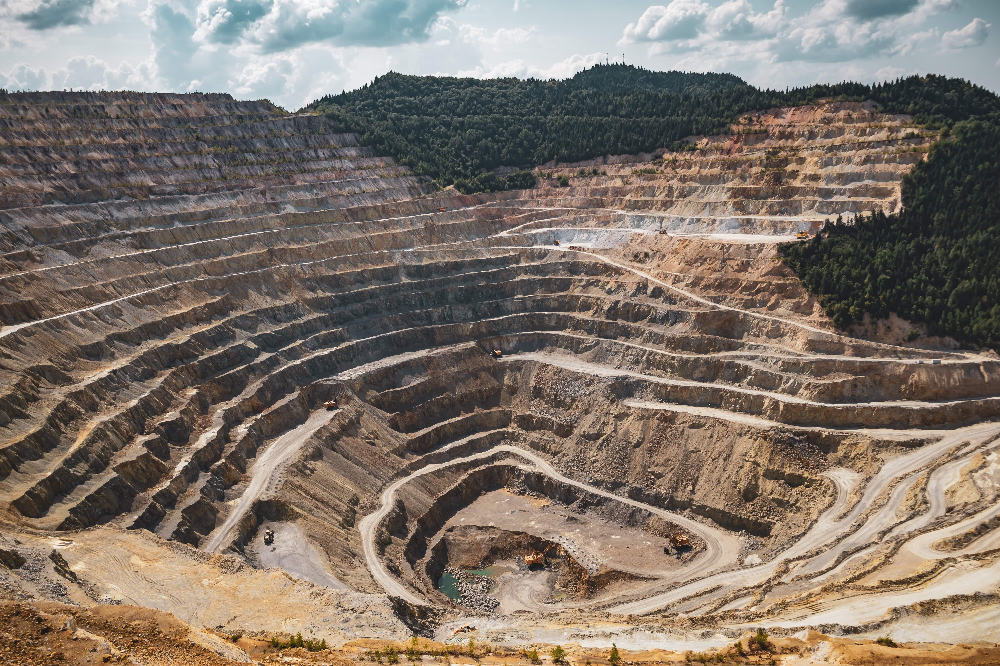

Consultoría Minera · Chile
Análisis técnico-económico riguroso aplicado a operaciones mineras a cielo abierto. Decisiones respaldadas por modelamiento cuantitativo y benchmarking de otras faenas mineras.

Resultados comprobados en minas de cobre y hierro
Trabajamos con operaciones mineras líderes en Chile · Credenciales: PUCV, USM, Universidad de Chile · Autor de 6 libros técnicos sobre mantenimiento minero
Nuestros Servicios
Proyectamos los costos de mantenimiento asociados a combustible, lubricantes, neumáticos, herramientas de desgaste, repuestos y servicios para una planificación presupuestaria más exacta.
↑ Ajustes de 15–20% en proyecciones de gasto
Evaluación técnica y económica de distintas opciones de equipos, considerando costos de ciclo de vida, cláusulas contractuales y garantías ofrecidas por los proveedores.
↓ Diferencias de hasta 18% en costos de adquisición
Evaluamos el momento óptimo para el reemplazo de equipos con alta recurrencia de fallas, dificultades de abastecimiento o bajo desempeño frente a nuevas tecnologías.
↓ Reducción de gastos de mantenimiento hasta 21%
Revisamos contratos de mantenimiento celebrados con OEM, identificando oportunidades de optimización, ajustes en tarifas y mejoras en los niveles de soporte técnico y logístico.
↓ Ahorros identificados de 12–14% en mantenimiento
Estudios de desempeño en terreno y análisis logísticos de reparaciones, con modelos de gestión que determinan el momento óptimo para realizar rotaciones.
↓ Reducción del 36% en gastos de neumáticos (3 años)
Aplicamos modelos estadísticos avanzados para definir niveles óptimos de inventario de repuestos críticos, equilibrando disponibilidad operativa con minimización del capital inmovilizado.
✦ Economías de escala en adquisición de componentes
Casos de Éxito
Minería del Cobre · Norte de Chile
Operación con flota de 28 camiones presentaba desgaste acelerado de neumáticos y altos costos de reposición sin claridad sobre las causas raíz.
Minería del Cobre · Centro-Norte
Proyecto en etapa de ingeniería básica requería proyecciones de costos de mantenimiento para planificación presupuestaria de 15 años.
Minería del Cobre · Región Central
Flota de 35 camiones con alta indisponibilidad y crecientes costos de mantenimiento requería decisión de reemplazo vs. overhaul.
Resultados Comprobados
Publicaciones Técnicas
Una colección de libros técnicos que combinan rigor metodológico con experiencia práctica en faenas mineras reales. Disponibles individualmente o como colección completa.
Liderazgo, innovación, neumáticos, estimación de costos, externalización y reemplazo de equipos. Seis capítulos con casos reales en faenas mineras.
6 capítulos · Casos prácticosSesgos cognitivos, neurociencia y economía del comportamiento aplicados al mantenimiento. Cómo los comportamientos inconscientes influyen en las decisiones.
Behavioral Science · MantenimientoGestión óptima de repuestos con teoría de colas, cadenas de Markov y simulación Monte Carlo. Cómo determinar el pool de componentes ideal para su flota.
Inventario · SimulaciónVAN, VAC, CAE y VAE aplicados al reemplazo de flotas. Incluye camiones autónomos, costos operacionales y metodologías de evaluación de proyectos de inversión.
Evaluación de proyectos · VANDeterminación de la frecuencia óptima de reemplazo de componentes. Tipos de reparaciones, TBO, costos por unidad de tiempo y casos numéricos detallados.
Confiabilidad · TBOToma de decisiones en contextos de incertidumbre. Sesgos cognitivos en accidentes industriales y cómo desarrollar una "mente confiable" individual y organizacional.
Decisiones · Excelencia operacionalEdición Especial
Este exclusivo pack reúne en una sola edición el conocimiento fundamental para abordar con éxito los principales desafíos del mantenimiento en minería a cielo abierto. Presentado en formato de caja exclusiva — ideal para programas de capacitación, formación continua o como obsequio institucional de alto valor corporativo.
Nuestra Metodología
Identificamos brechas en los indicadores actuales de mantenimiento mediante análisis de datos operacionales en terreno.
Aplicamos modelos estadísticos y metodologías de ingeniería para cuantificar oportunidades de mejora con precisión.
Entregamos soluciones a medida con bases de ingeniería que justifican técnicamente cada decisión estratégica.
Acompañamos la implementación para asegurar que los resultados proyectados se materialicen en la operación real.
Por qué Invictum
Red de profesionales con amplia trayectoria operativa en minas de cobre y hierro en Chile. No somos consultores genéricos.
Modelos estadísticos avanzados, simulaciones Monte Carlo y análisis de ciclo de vida que respaldan cada recomendación.
Cada proyecto se diseña según las condiciones específicas de su operación, flota y contratos vigentes.
Autor de seis libros técnicos sobre mantenimiento minero, lo que refleja profundidad intelectual y compromiso con la disciplina.
Contacto
Un diagnóstico inicial sin costo le permitirá identificar oportunidades de mejora inmediatas en su operación. Agende una llamada con nuestro líder de proyectos.